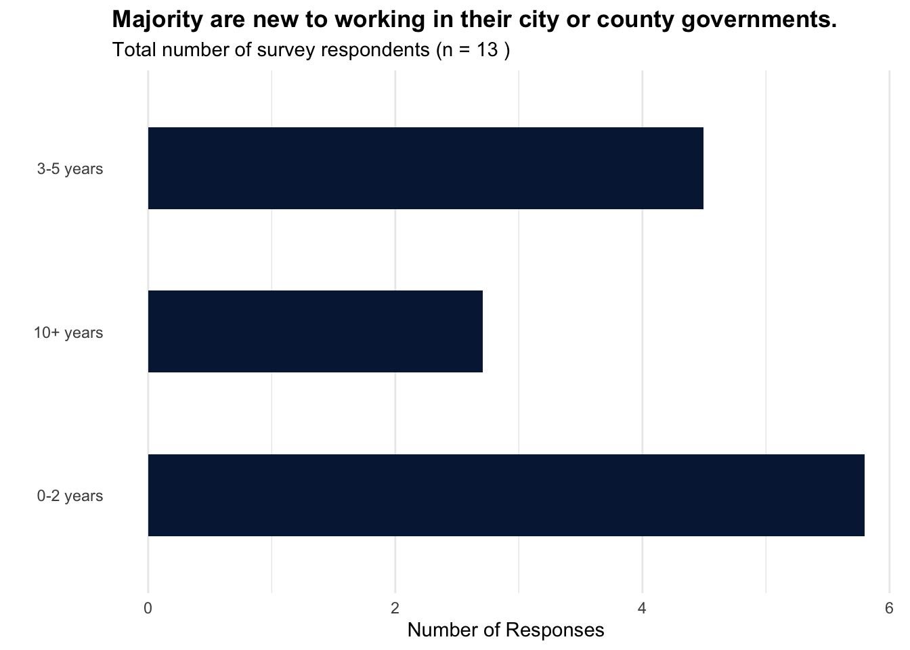
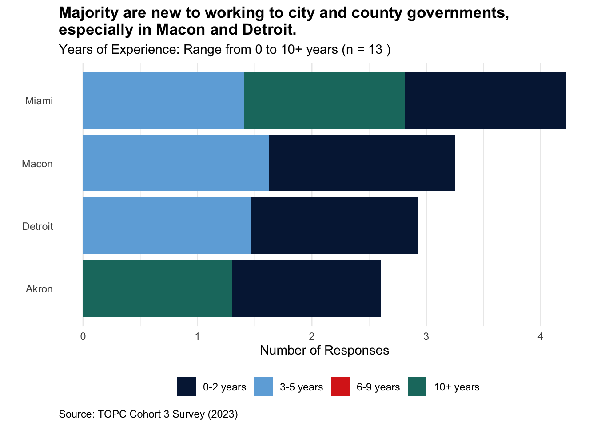
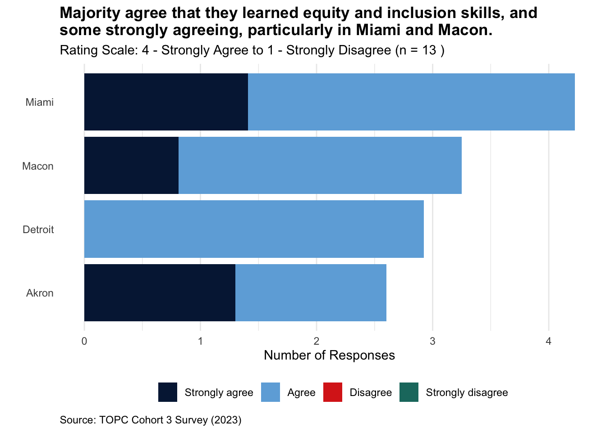
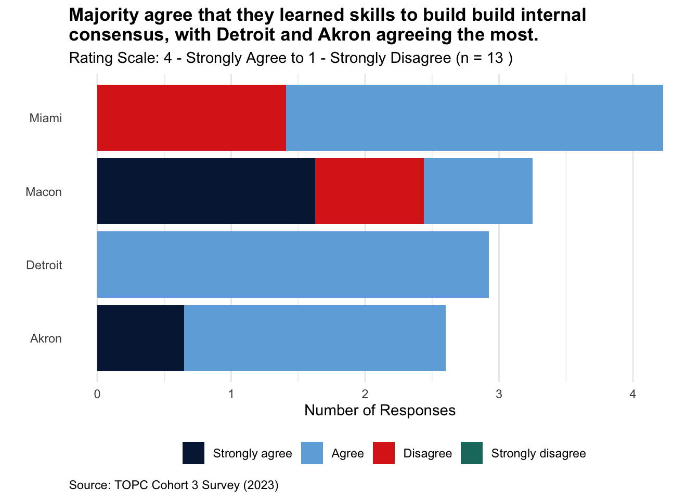
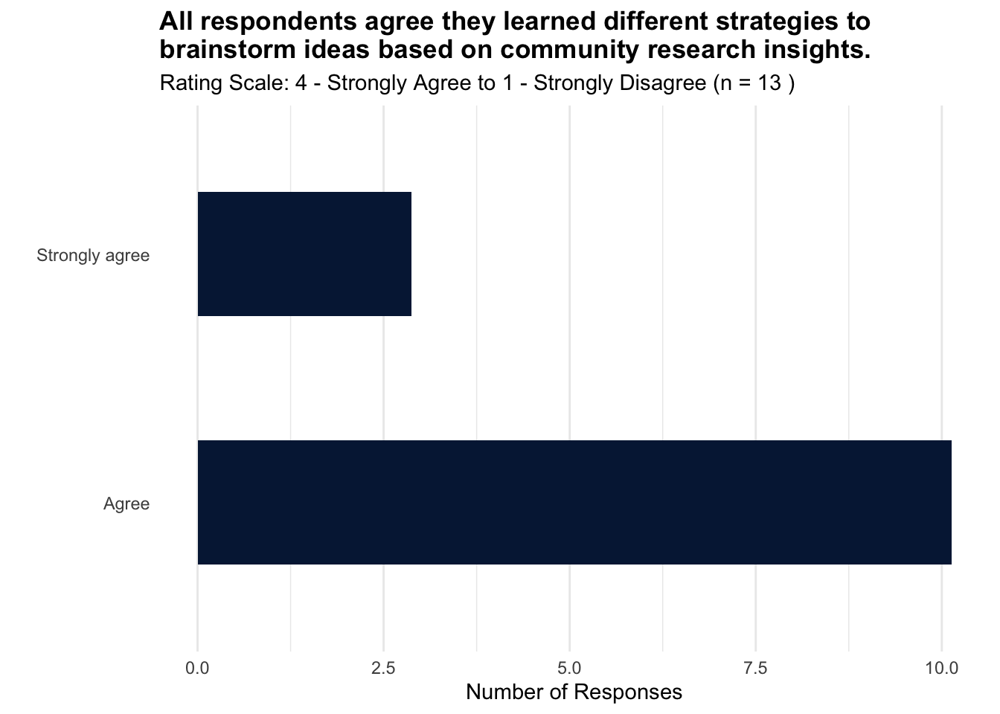
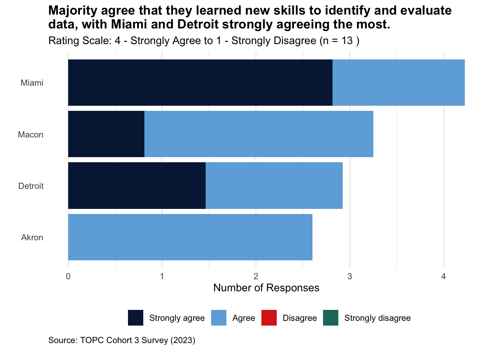
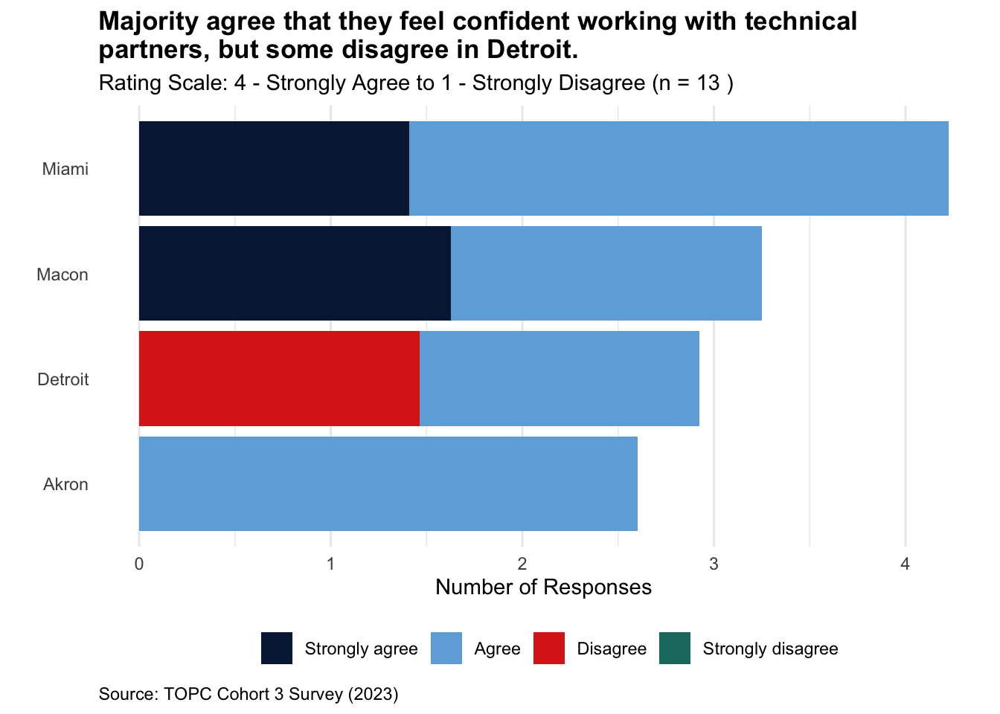

Graphs for post-test survey analysis for city governments.
Install necessary packages
Code
# Set a CRAN mirroroptions(repos =c(CRAN ="https://cloud.r-project.org"))# Install necessary packages# install.packages("magrittr")# install.packages("dplyr")# install.packages("ggplot2")# install.packages("knitr")# install.packages("KableExtra")# install.packages("survey")# Load the packageslibrary(magrittr)library(dplyr)library(ggplot2)library(knitr)library(survey)
Survey design weights
Code
# Read the data from the CSV filecohort3FinalGov <-read.csv("~/Documents/GitHub/TOPC-impact-evaluation-dashboard/Cohort 3/cohort3FinalGov2.csv")# Define population and sample sizespopulation_counts <-c(Akron =8, Detroit =9, Macon =10, Miami =13)sample_counts <-c(Akron =4, Detroit =2, Macon =4, Miami =3)# Total population and sample sizetotal_population <-sum(population_counts)total_sample <-sum(sample_counts)# Calculate the weightsweights <- (population_counts / total_population) / (sample_counts / total_sample)# Print the calculated weightsprint(weights)
Akron Detroit Macon Miami
0.650000 1.462500 0.812500 1.408333
Code
# Map between city names city_map <-list("Miami-Dade County, FL"="Miami","Akron, OH"="Akron","Detroit, MI"="Detroit","Macon-Bibb County, GA"="Macon")# Update dataframe to use the mapped namescohort3FinalGov$city_mapped <-unlist(lapply(cohort3FinalGov$q3, function(x) city_map[[x]]))# Assign weights using the mapped city namescohort3FinalGov$weights <- weights[cohort3FinalGov$city_mapped]# Define the survey designdesign <-svydesign(ids =~1, strata =~city_mapped, weights =~weights, data = cohort3FinalGov)
Code
# Assign weights to responsesweight_mapping <-c("Strongly agree"=4, "Agree"=3, "Disagree"=2, "Strongly disagree"=1)# Map the responses in the survey data to their weightscohort3FinalGov$WeightedValue <- weight_mapping[cohort3FinalGov$q4]# Check if the mapping worked correctly# print(head(cohort3FinalGov))
Given this in the data:
Table 1. Count of population and sample participants in city governments in the TOPC program in Cohort 3
City Teams
Population Count
Sample Count
Akron
8
4
Detroit
9
2
Macon
10
4
Miami
13
3
Total
40
13
The formula I used to align proportions of population to proportions of sample)
\(\text{Weight of strata} = \frac{\frac{\text{Strata Population}}{\text{Total Population}}}{\frac{\text{Strata Sample}}{\text{Total Sample}}}\)
\(\text{Weight for Akron} = \frac{\frac{8}{40}}{\frac{4}{14}} = \frac{0.2}{0.2857} \approx 0.700\)
\(\text{Weight for Detroit} = \frac{\frac{9}{40}}{\frac{2}{14}} = \frac{0.225}{0.1429} \approx 1.575\)
\(\text{Weight for Macon} = \frac{\frac{10}{40}}{\frac{4}{14}} = \frac{0.25}{0.2857} \approx 0.875\)
\(\text{Weight for Miami} = \frac{\frac{13}{40}}{\frac{3}{14}} = \frac{0.325}{0.2143} \approx 1.517\)
Participant Background
Q3. Which city/county are you representing?
Code
# Single-variable frequency plotq3_frequency <-svytable(~q3, design = design)ggplot(as.data.frame(q3_frequency), aes(x = q3, y = Freq)) +geom_bar(stat ="identity", fill ="#041e42", width =0.5) +coord_flip() +labs(title ="All city governments participated in the survey with the highest number of respondents from Miami-Dade and Macon-Bibb Counties.",subtitle =paste("Total number of survey respondents per city team (n =", total_sample, ")"),x ="",y ="Number of Responses") +theme_minimal() +theme(legend.position ="bottom",legend.box ="vertical",legend.box.margin =margin(0, 0, 0, 0),legend.title =element_blank(),panel.grid.major.y =element_blank(),panel.grid.minor.y =element_blank(),plot.title =element_text(face ="bold"),plot.caption =element_text(hjust =0)) +guides(fill =guide_legend(nrow =1, byrow =TRUE))
Q25. Which title best describes your role and level of seniority at work?
Code
# Single-variable frequency plotq25_frequency <-svytable(~q25, design = design)ggplot(as.data.frame(q25_frequency), aes(x = q25, y = Freq)) +geom_bar(stat ="identity", fill ="#041e42", width =0.5) +coord_flip() +labs(title ="Majority of respondents are senior officials or managers.",subtitle =paste("Total number of survey respondents (n =", total_sample, ")"),x ="",y ="Number of Responses") +theme_minimal() +theme(legend.position ="bottom",legend.box ="vertical",legend.box.margin =margin(0, 0, 0, 0),legend.title =element_blank(),panel.grid.major.y =element_blank(),panel.grid.minor.y =element_blank(),plot.title =element_text(face ="bold"),plot.caption =element_text(hjust =0)) +guides(fill =guide_legend(nrow =1, byrow =TRUE))
Q27. How many years have you worked at your respective City or County?
Code
# Single-variable frequency plotq27_frequency <-svytable(~q27, design = design)ggplot(as.data.frame(q27_frequency), aes(x = q27, y = Freq)) +geom_bar(stat ="identity", fill ="#041e42", width =0.5) +coord_flip() +labs(title ="Majority are new to working in their city or county governments.",subtitle =paste("Total number of survey respondents (n =", total_sample, ")"),x ="",y ="Number of Responses") +theme_minimal() +theme(legend.position ="bottom",legend.box ="vertical",legend.box.margin =margin(0, 0, 0, 0),legend.title =element_blank(),panel.grid.major.y =element_blank(),panel.grid.minor.y =element_blank(),plot.title =element_text(face ="bold"),plot.caption =element_text(hjust =0)) +guides(fill =guide_legend(nrow =1, byrow =TRUE))

Code
# Cross-tabulation with citiesq27_cross_tab_city <-svytable(~q27 + city_mapped, design = design)ggplot(as.data.frame(q27_cross_tab_city), aes(x = city_mapped, y = Freq, fill = q27)) +geom_bar(stat ="identity", position ="stack") +coord_flip() +scale_fill_manual(values =c("#041e42","#6eaddc","#da291c","#1B786E"),limits =c("0-2 years", "3-5 years", "6-9 years", "10+ years")) +labs(title ="Majority are new to working to city and county governments, especially in Macon and Detroit.",subtitle =paste("Years of Experience: Range from 0 to 10+ years (n =", total_sample, ")"),x ="",y ="Number of Responses",caption ="Source: TOPC Cohort 3 Survey (2023)") +theme_minimal() +theme(legend.position ="bottom",legend.box ="vertical",legend.box.margin =margin(0, 0, 0, 0),legend.title =element_blank(),panel.grid.major.y =element_blank(),panel.grid.minor.y =element_blank(),plot.title =element_text(face ="bold"),plot.caption =element_text(hjust =0)) +guides(fill =guide_legend(nrow =1, byrow =TRUE))

Q28. Please describe your racial/ethnic identity. Select all that apply.
Code
# Single-variable frequency plotq28_frequency <-svytable(~q28, design = design)ggplot(as.data.frame(q28_frequency), aes(x = q28, y = Freq)) +geom_bar(stat ="identity", fill ="#041e42", width =0.5) +coord_flip() +labs(title ="Majority are new to working in their city or county governments.",subtitle =paste("Total number of survey respondents (n =", total_sample, ")"),x ="",y ="Number of Responses") +theme_minimal() +theme(legend.position ="bottom",legend.box ="vertical",legend.box.margin =margin(0, 0, 0, 0),legend.title =element_blank(),panel.grid.major.y =element_blank(),panel.grid.minor.y =element_blank(),plot.title =element_text(face ="bold"),plot.caption =element_text(hjust =0)) +guides(fill =guide_legend(nrow =1, byrow =TRUE))
Q29. Which gender do you most closely identify with (or self-describe in ‘other’)?
Code
# Single-variable frequency plotq29_frequency <-svytable(~q29, design = design)ggplot(as.data.frame(q29_frequency), aes(x = q29, y = Freq)) +geom_bar(stat ="identity", fill ="#041e42", width =0.5) +coord_flip() +labs(title ="More than half of respondents identify as male.",subtitle =paste("Total number of survey respondents (n =", total_sample, ")"),x ="",y ="Number of Responses") +theme_minimal() +theme(legend.position ="bottom",legend.box ="vertical",legend.box.margin =margin(0, 0, 0, 0),legend.title =element_blank(),panel.grid.major.y =element_blank(),panel.grid.minor.y =element_blank(),plot.title =element_text(face ="bold"),plot.caption =element_text(hjust =0)) +guides(fill =guide_legend(nrow =1, byrow =TRUE))
Q5. I learned skills to promote equity and foster inclusive spaces in my work.
Code
# Single-variable frequency plotq5_frequency <-svytable(~q5, design = design)ggplot(as.data.frame(q5_frequency), aes(x = q5, y = Freq)) +geom_bar(stat ="identity", fill ="#041e42", width =0.5) +coord_flip() +labs(title ="All respondents agree they learned new skills to promoteequity and inclusion in their work.",subtitle =paste("Rating Scale: 4 - Strongly Agree to 1 - Strongly Disagree (n =", total_sample, ")"),x ="",y ="Number of Responses") +theme_minimal() +theme(panel.grid.major.y =element_blank(),panel.grid.minor.y =element_blank(),plot.title =element_text(face ="bold"))
Code
# Cross-tabulation with citiesq5_cross_tab_city <-svytable(~q5 + city_mapped, design = design)ggplot(as.data.frame(q5_cross_tab_city), aes(x = city_mapped, y = Freq, fill = q5)) +geom_bar(stat ="identity", position ="stack") +coord_flip() +scale_fill_manual(values =c("#041e42","#6eaddc","#da291c","#1B786E"),limits =c("Strongly agree", "Agree", "Disagree", "Strongly disagree")) +labs(title ="Majority agree that they learned equity and inclusion skills, andsome strongly agreeing, particularly in Miami and Macon.",subtitle =paste("Rating Scale: 4 - Strongly Agree to 1 - Strongly Disagree (n =", total_sample, ")"),x ="",y ="Number of Responses",caption ="Source: TOPC Cohort 3 Survey (2023)") +theme_minimal() +theme(legend.position ="bottom",legend.box ="vertical",legend.box.margin =margin(0, 0, 0, 0),legend.title =element_blank(),panel.grid.major.y =element_blank(),panel.grid.minor.y =element_blank(),plot.title =element_text(face ="bold"),plot.caption =element_text(hjust =0)) +guides(fill =guide_legend(nrow =1, byrow =TRUE))

Q6. I learned new skills in applying user testing feedback to shape the development of our solution.
Code
# Single-variable frequency plotq6_frequency <-svytable(~q6, design = design)ggplot(as.data.frame(q6_frequency), aes(x = q6, y = Freq)) +geom_bar(stat ="identity", fill ="#041e42", width =0.5) +coord_flip() +labs(title ="All respondents agree they learned new skills to apply user testing feedback in their solution development.",subtitle =paste("Rating Scale: 4 - Strongly Agree to 1 - Strongly Disagree (n =", total_sample, ")"),x ="",y ="Number of Responses") +theme_minimal() +theme(panel.grid.major.y =element_blank(),panel.grid.minor.y =element_blank(),plot.title =element_text(face ="bold"))
Code
# Cross-tabulation with citiesq6_cross_tab_city <-svytable(~q6 + city_mapped, design = design)ggplot(as.data.frame(q6_cross_tab_city), aes(x = city_mapped, y = Freq, fill = q6)) +geom_bar(stat ="identity", position ="stack") +coord_flip() +scale_fill_manual(values =c("#041e42","#6eaddc","#da291c","#1B786E"),limits =c("Strongly agree", "Agree", "Disagree", "Strongly disagree")) +labs(title ="Majority agree that they learned user testing skills to develop their solutions, with Miami strongly agreeing the most.",subtitle =paste("Rating Scale: 4 - Strongly Agree to 1 - Strongly Disagree (n =", total_sample, ")"),x ="",y ="Number of Responses",caption ="Source: TOPC Cohort 3 Survey (2023)") +theme_minimal() +theme(legend.position ="bottom",legend.box ="vertical",legend.box.margin =margin(0, 0, 0, 0),legend.title =element_blank(),panel.grid.major.y =element_blank(),panel.grid.minor.y =element_blank(),plot.title =element_text(face ="bold"),plot.caption =element_text(hjust =0)) +guides(fill =guide_legend(nrow =1, byrow =TRUE))
Q15. I learned new skills in collaborating with a community organization to research a problem and co-design a solution.
Code
# Single-variable frequency plotq15_frequency <-svytable(~q15, design = design)ggplot(as.data.frame(q15_frequency), aes(x = q15, y = Freq)) +geom_bar(stat ="identity", fill ="#041e42", width =0.5) +coord_flip() +labs(title ="All respondents agree they learned new skills to collaborate with a community organization from problem discovery to solution co-design.",subtitle =paste("Rating Scale: 4 - Strongly Agree to 1 - Strongly Disagree (n =", total_sample, ")"),x ="",y ="Number of Responses") +theme_minimal() +theme(panel.grid.major.y =element_blank(),panel.grid.minor.y =element_blank(),plot.title =element_text(face ="bold"))
Code
# Cross-tabulation with citiesq15_cross_tab_city <-svytable(~q15 + city_mapped, design = design)ggplot(as.data.frame(q15_cross_tab_city), aes(x = city_mapped, y = Freq, fill = q15)) +geom_bar(stat ="identity", position ="stack") +coord_flip() +scale_fill_manual(values =c("#041e42","#6eaddc","#da291c","#1B786E"),limits =c("Strongly agree", "Agree", "Disagree", "Strongly disagree")) +labs(title ="Majority agree that they learned skills to collaborate with a community organization, with Akron strongly agreeing the most.",subtitle =paste("Rating Scale: 4 - Strongly Agree to 1 - Strongly Disagree (n =", total_sample, ")"),x ="",y ="Number of Responses",caption ="Source: TOPC Cohort 3 Survey (2023)") +theme_minimal() +theme(legend.position ="bottom",legend.box ="vertical",legend.box.margin =margin(0, 0, 0, 0),legend.title =element_blank(),panel.grid.major.y =element_blank(),panel.grid.minor.y =element_blank(),plot.title =element_text(face ="bold"),plot.caption =element_text(hjust =0)) +guides(fill =guide_legend(nrow =1, byrow =TRUE))
Q16. I learned new skills in building consensus and aligning on long-term plans with internal stakeholders.
Code
# Single-variable frequency plotq16_frequency <-svytable(~q16, design = design)ggplot(as.data.frame(q16_frequency), aes(x = q16, y = Freq)) +geom_bar(stat ="identity", fill ="#041e42", width =0.5) +coord_flip() +labs(title ="All respondents agree they learned news skills to build consensus and align on long-term plans with internal stakeholders.",subtitle =paste("Rating Scale: 4 - Strongly Agree to 1 - Strongly Disagree (n =", total_sample, ")"),x ="",y ="Number of Responses") +theme_minimal() +theme(panel.grid.major.y =element_blank(),panel.grid.minor.y =element_blank(),plot.title =element_text(face ="bold"))
Code
# Cross-tabulation with citiesq16_cross_tab_city <-svytable(~q16 + city_mapped, design = design)ggplot(as.data.frame(q16_cross_tab_city), aes(x = city_mapped, y = Freq, fill = q16)) +geom_bar(stat ="identity", position ="stack") +coord_flip() +scale_fill_manual(values =c("#041e42","#6eaddc","#da291c","#1B786E"),limits =c("Strongly agree", "Agree", "Disagree", "Strongly disagree")) +labs(title ="Majority agree that they learned skills to build build internal consensus, with Detroit and Akron agreeing the most.",subtitle =paste("Rating Scale: 4 - Strongly Agree to 1 - Strongly Disagree (n =", total_sample, ")"),x ="",y ="Number of Responses",caption ="Source: TOPC Cohort 3 Survey (2023)") +theme_minimal() +theme(legend.position ="bottom",legend.box ="vertical",legend.box.margin =margin(0, 0, 0, 0),legend.title =element_blank(),panel.grid.major.y =element_blank(),panel.grid.minor.y =element_blank(),plot.title =element_text(face ="bold"),plot.caption =element_text(hjust =0)) +guides(fill =guide_legend(nrow =1, byrow =TRUE))

Q9. I learned different strategies to brainstorm many ideas based on the insights taken from the community research.
Code
# Single-variable frequency plotq9_frequency <-svytable(~q9, design = design)ggplot(as.data.frame(q9_frequency), aes(x = q9, y = Freq)) +geom_bar(stat ="identity", fill ="#041e42", width =0.5) +coord_flip() +labs(title ="All respondents agree they learned different strategies to brainstorm ideas based on community research insights.",subtitle =paste("Rating Scale: 4 - Strongly Agree to 1 - Strongly Disagree (n =", total_sample, ")"),x ="",y ="Number of Responses") +theme_minimal() +theme(panel.grid.major.y =element_blank(),panel.grid.minor.y =element_blank(),plot.title =element_text(face ="bold"))

Code
# Cross-tabulation with citiesq9_cross_tab_city <-svytable(~q9 + city_mapped, design = design)ggplot(as.data.frame(q9_cross_tab_city), aes(x = city_mapped, y = Freq, fill = q9)) +geom_bar(stat ="identity", position ="stack") +coord_flip() +scale_fill_manual(values =c("#041e42","#6eaddc","#da291c","#1B786E"),limits =c("Strongly agree", "Agree", "Disagree", "Strongly disagree")) +labs(title ="Majority agree that they learned different strategories to brainstorm ideas using community research, but some disagree in Miami and Macon.",subtitle =paste("Rating Scale: 4 - Strongly Agree to 1 - Strongly Disagree (n =", total_sample, ")"),x ="",y ="Number of Responses",caption ="Source: TOPC Cohort 3 Survey (2023)") +theme_minimal() +theme(legend.position ="bottom",legend.box ="vertical",legend.box.margin =margin(0, 0, 0, 0),legend.title =element_blank(),panel.grid.major.y =element_blank(),panel.grid.minor.y =element_blank(),plot.title =element_text(face ="bold"),plot.caption =element_text(hjust =0)) +guides(fill =guide_legend(nrow =1, byrow =TRUE))
Q10. I learned new skills in outlining and prioritizing requirements for the development of a digital product.
Code
# Single-variable frequency plotq10_frequency <-svytable(~q10, design = design)ggplot(as.data.frame(q10_frequency), aes(x = q10, y = Freq)) +geom_bar(stat ="identity", fill ="#041e42", width =0.5) +coord_flip() +labs(title ="All respondents agree they learned new skills to prioritize requirements to develop a digital product.",subtitle =paste("Rating Scale: 4 - Strongly Agree to 1 - Strongly Disagree (n =", total_sample, ")"),x ="",y ="Number of Responses") +theme_minimal() +theme(panel.grid.major.y =element_blank(),panel.grid.minor.y =element_blank(),plot.title =element_text(face ="bold"))
Code
# Cross-tabulation with citiesq10_cross_tab_city <-svytable(~q10 + city_mapped, design = design)ggplot(as.data.frame(q10_cross_tab_city), aes(x = city_mapped, y = Freq, fill = q10)) +geom_bar(stat ="identity", position ="stack") +coord_flip() +scale_fill_manual(values =c("#041e42","#6eaddc","#da291c","#1B786E"),limits =c("Strongly agree", "Agree", "Disagree", "Strongly disagree")) +labs(title ="Majority agree that they learned new skills to prioritize requirements to develop a digital product, with Miami and Detroit strongly agreeingthe most.",subtitle =paste("Rating Scale: 4 - Strongly Agree to 1 - Strongly Disagree (n =", total_sample, ")"),x ="",y ="Number of Responses",caption ="Source: TOPC Cohort 3 Survey (2023)") +theme_minimal() +theme(legend.position ="bottom",legend.box ="vertical",legend.box.margin =margin(0, 0, 0, 0),legend.title =element_blank(),panel.grid.major.y =element_blank(),panel.grid.minor.y =element_blank(),plot.title =element_text(face ="bold"),plot.caption =element_text(hjust =0)) +guides(fill =guide_legend(nrow =1, byrow =TRUE))
Q11. I learned new skills in identifying and evaluating data to support the digital solution.
Code
# Single-variable frequency plotq11_frequency <-svytable(~q11, design = design)ggplot(as.data.frame(q11_frequency), aes(x = q11, y = Freq)) +geom_bar(stat ="identity", fill ="#041e42", width =0.5) +coord_flip() +labs(title ="All respondents agree they learned new skills to identify and evaluate data.",subtitle =paste("Rating Scale: 4 - Strongly Agree to 1 - Strongly Disagree (n =", total_sample, ")"),x ="",y ="Number of Responses") +theme_minimal() +theme(panel.grid.major.y =element_blank(),panel.grid.minor.y =element_blank(),plot.title =element_text(face ="bold"))
Code
# Cross-tabulation with citiesq11_cross_tab_city <-svytable(~q11 + city_mapped, design = design)ggplot(as.data.frame(q11_cross_tab_city), aes(x = city_mapped, y = Freq, fill = q11)) +geom_bar(stat ="identity", position ="stack") +coord_flip() +scale_fill_manual(values =c("#041e42","#6eaddc","#da291c","#1B786E"),limits =c("Strongly agree", "Agree", "Disagree", "Strongly disagree")) +labs(title ="Majority agree that they learned new skills to identify and evaluate data, with Miami and Detroit strongly agreeing the most.",subtitle =paste("Rating Scale: 4 - Strongly Agree to 1 - Strongly Disagree (n =", total_sample, ")"),x ="",y ="Number of Responses",caption ="Source: TOPC Cohort 3 Survey (2023)") +theme_minimal() +theme(legend.position ="bottom",legend.box ="vertical",legend.box.margin =margin(0, 0, 0, 0),legend.title =element_blank(),panel.grid.major.y =element_blank(),panel.grid.minor.y =element_blank(),plot.title =element_text(face ="bold"),plot.caption =element_text(hjust =0)) +guides(fill =guide_legend(nrow =1, byrow =TRUE))

Q12. I learned new skills for managing the development of a digital product.
Code
# Single-variable frequency plotq12_frequency <-svytable(~q12, design = design)ggplot(as.data.frame(q12_frequency), aes(x = q12, y = Freq)) +geom_bar(stat ="identity", fill ="#041e42", width =0.5) +coord_flip() +labs(title ="Most respondents agree they learned new skills to managedeveloping a digital product.",subtitle =paste("Rating Scale: 4 - Strongly Agree to 1 - Strongly Disagree (n =", total_sample, ")"),x ="",y ="Number of Responses") +theme_minimal() +theme(panel.grid.major.y =element_blank(),panel.grid.minor.y =element_blank(),plot.title =element_text(face ="bold"))
Code
# Cross-tabulation with citiesq12_cross_tab_city <-svytable(~q12 + city_mapped, design = design)ggplot(as.data.frame(q12_cross_tab_city), aes(x = city_mapped, y = Freq, fill = q12)) +geom_bar(stat ="identity", position ="stack") +coord_flip() +scale_fill_manual(values =c("#041e42","#6eaddc","#da291c","#1B786E"),limits =c("Strongly agree", "Agree", "Disagree", "Strongly disagree")) +labs(title ="Majority agree that they learned new skills to manage developing a digital product, but some disagree in Macon and Detroit.",subtitle =paste("Rating Scale: 4 - Strongly Agree to 1 - Strongly Disagree (n =", total_sample, ")"),x ="",y ="Number of Responses",caption ="Source: TOPC Cohort 3 Survey (2023)") +theme_minimal() +theme(legend.position ="bottom",legend.box ="vertical",legend.box.margin =margin(0, 0, 0, 0),legend.title =element_blank(),panel.grid.major.y =element_blank(),panel.grid.minor.y =element_blank(),plot.title =element_text(face ="bold"),plot.caption =element_text(hjust =0)) +guides(fill =guide_legend(nrow =1, byrow =TRUE))
Q13. I learned new skills for creating a product sustainability plan to ensure that product is improved and maintained.
Code
# Single-variable frequency plotq13_frequency <-svytable(~q13, design = design)ggplot(as.data.frame(q13_frequency), aes(x = q13, y = Freq)) +geom_bar(stat ="identity", fill ="#041e42", width =0.5) +coord_flip() +labs(title ="Most respondents agree they learned new skills to create aproduct sustainability plan.",subtitle =paste("Rating Scale: 4 - Strongly Agree to 1 - Strongly Disagree (n =", total_sample, ")"),x ="",y ="Number of Responses") +theme_minimal() +theme(panel.grid.major.y =element_blank(),panel.grid.minor.y =element_blank(),plot.title =element_text(face ="bold"))
Code
# Cross-tabulation with citiesq13_cross_tab_city <-svytable(~q13 + city_mapped, design = design)ggplot(as.data.frame(q13_cross_tab_city), aes(x = city_mapped, y = Freq, fill = q13)) +geom_bar(stat ="identity", position ="stack") +coord_flip() +scale_fill_manual(values =c("#041e42","#6eaddc","#da291c","#1B786E"),limits =c("Strongly agree", "Agree", "Disagree", "Strongly disagree")) +labs(title ="Majority agree that they learned new skills to create a product sustainability plan, but some disagree in Detroit.",subtitle =paste("Rating Scale: 4 - Strongly Agree to 1 - Strongly Disagree (n =", total_sample, ")"),x ="",y ="Number of Responses",caption ="Source: TOPC Cohort 3 Survey (2023)") +theme_minimal() +theme(legend.position ="bottom",legend.box ="vertical",legend.box.margin =margin(0, 0, 0, 0),legend.title =element_blank(),panel.grid.major.y =element_blank(),panel.grid.minor.y =element_blank(),plot.title =element_text(face ="bold"),plot.caption =element_text(hjust =0)) +guides(fill =guide_legend(nrow =1, byrow =TRUE))
Goal 2: Participant Confidence and Competence
Q14. I have the skills and support to be able to innovate in my day-to-day work.
Code
# Single-variable frequency plotq14_frequency <-svytable(~q14, design = design)ggplot(as.data.frame(q14_frequency), aes(x = q14, y = Freq)) +geom_bar(stat ="identity", fill ="#041e42", width =0.5) +coord_flip() +labs(title ="Most respondents agree they have the skills and supportto innovate in their everyday work.",subtitle =paste("Rating Scale: 4 - Strongly Agree to 1 - Strongly Disagree (n =", total_sample, ")"),x ="",y ="Number of Responses") +theme_minimal() +theme(panel.grid.major.y =element_blank(),panel.grid.minor.y =element_blank(),plot.title =element_text(face ="bold"))
Code
# Cross-tabulation with citiesq14_cross_tab_city <-svytable(~q14 + city_mapped, design = design)ggplot(as.data.frame(q14_cross_tab_city), aes(x = city_mapped, y = Freq, fill = q14)) +geom_bar(stat ="identity", position ="stack") +coord_flip() +scale_fill_manual(values =c("#041e42","#6eaddc","#da291c","#1B786E"),limits =c("Strongly agree", "Agree", "Disagree", "Strongly disagree")) +labs(title ="Majority agree that they have the skills and support to innovatein their everyday work, but some disagree in Detroit.",subtitle =paste("Rating Scale: 4 - Strongly Agree to 1 - Strongly Disagree (n =", total_sample, ")"),x ="",y ="Number of Responses",caption ="Source: TOPC Cohort 3 Survey (2023)") +theme_minimal() +theme(legend.position ="bottom",legend.box ="vertical",legend.box.margin =margin(0, 0, 0, 0),legend.title =element_blank(),panel.grid.major.y =element_blank(),panel.grid.minor.y =element_blank(),plot.title =element_text(face ="bold"),plot.caption =element_text(hjust =0)) +guides(fill =guide_legend(nrow =1, byrow =TRUE))
Q17. I feel confident working with technical partners to design a tool and advance the tool’s development.
Code
# Single-variable frequency plotq17_frequency <-svytable(~q17, design = design)ggplot(as.data.frame(q17_frequency), aes(x = q17, y = Freq)) +geom_bar(stat ="identity", fill ="#041e42", width =0.5) +coord_flip() +labs(title ="Most respondents agree they feel confident working with technicalpartners to design a tool.",subtitle =paste("Rating Scale: 4 - Strongly Agree to 1 - Strongly Disagree (n =", total_sample, ")"),x ="",y ="Number of Responses") +theme_minimal() +theme(panel.grid.major.y =element_blank(),panel.grid.minor.y =element_blank(),plot.title =element_text(face ="bold"))
Code
# Cross-tabulation with citiesq17_cross_tab_city <-svytable(~q17 + city_mapped, design = design)ggplot(as.data.frame(q17_cross_tab_city), aes(x = city_mapped, y = Freq, fill = q17)) +geom_bar(stat ="identity", position ="stack") +coord_flip() +scale_fill_manual(values =c("#041e42","#6eaddc","#da291c","#1B786E"),limits =c("Strongly agree", "Agree", "Disagree", "Strongly disagree")) +labs(title ="Majority agree that they feel confident working with technicalpartners, but some disagree in Detroit.",subtitle =paste("Rating Scale: 4 - Strongly Agree to 1 - Strongly Disagree (n =", total_sample, ")"),x ="",y ="Number of Responses",caption ="Source: TOPC Cohort 3 Survey (2023)") +theme_minimal() +theme(legend.position ="bottom",legend.box ="vertical",legend.box.margin =margin(0, 0, 0, 0),legend.title =element_blank(),panel.grid.major.y =element_blank(),panel.grid.minor.y =element_blank(),plot.title =element_text(face ="bold"),plot.caption =element_text(hjust =0)) +guides(fill =guide_legend(nrow =1, byrow =TRUE))

Goal 3: Participant Recognition and Application of Methods
Q20. I am applying the skills I’m learning in this program to my day-to-day work.
Code
# Single-variable frequency plotq20_frequency <-svytable(~q20, design = design)ggplot(as.data.frame(q20_frequency), aes(x = q20, y = Freq)) +geom_bar(stat ="identity", fill ="#041e42", width =0.5) +coord_flip() +labs(title ="Most respondents agree they are applying the skills they have learned from the program in their everyday work.",subtitle =paste("Rating Scale: 4 - Strongly Agree to 1 - Strongly Disagree (n =", total_sample, ")"),x ="",y ="Number of Responses") +theme_minimal() +theme(panel.grid.major.y =element_blank(),panel.grid.minor.y =element_blank(),plot.title =element_text(face ="bold"))
Code
# Cross-tabulation with citiesq20_cross_tab_city <-svytable(~q20 + city_mapped, design = design)ggplot(as.data.frame(q20_cross_tab_city), aes(x = city_mapped, y = Freq, fill = q20)) +geom_bar(stat ="identity", position ="stack") +coord_flip() +scale_fill_manual(values =c("#041e42","#6eaddc","#da291c","#1B786E"),limits =c("Strongly agree", "Agree", "Disagree", "Strongly disagree")) +labs(title ="Majority agree that they apply the skills they have learned from the program, with Miami strongly agreeing the most.",subtitle =paste("Rating Scale: 4 - Strongly Agree to 1 - Strongly Disagree (n =", total_sample, ")"),x ="",y ="Number of Responses",caption ="Source: TOPC Cohort 3 Survey (2023)") +theme_minimal() +theme(legend.position ="bottom",legend.box ="vertical",legend.box.margin =margin(0, 0, 0, 0),legend.title =element_blank(),panel.grid.major.y =element_blank(),panel.grid.minor.y =element_blank(),plot.title =element_text(face ="bold"),plot.caption =element_text(hjust =0)) +guides(fill =guide_legend(nrow =1, byrow =TRUE))
Q7. My team has defined a role for residents or the community in designing services moving forward.
Code
# Single-variable frequency plotq7_frequency <-svytable(~q7, design = design)ggplot(as.data.frame(q7_frequency), aes(x = q7, y = Freq)) +geom_bar(stat ="identity", fill ="#041e42", width =0.5) +coord_flip() +labs(title ="Most respondents agree their teams have defined a role for the community to design services moving forward.",subtitle =paste("Rating Scale: 4 - Strongly Agree to 1 - Strongly Disagree (n =", total_sample, ")"),x ="",y ="Number of Responses") +theme_minimal() +theme(panel.grid.major.y =element_blank(),panel.grid.minor.y =element_blank(),plot.title =element_text(face ="bold"))
Code
# Cross-tabulation with citiesq7_cross_tab_city <-svytable(~q7 + city_mapped, design = design)ggplot(as.data.frame(q7_cross_tab_city), aes(x = city_mapped, y = Freq, fill = q7)) +geom_bar(stat ="identity", position ="stack") +coord_flip() +scale_fill_manual(values =c("#041e42","#6eaddc","#da291c","#1B786E"),limits =c("Strongly agree", "Agree", "Disagree", "Strongly disagree")) +labs(title ="Majority agree their teams have defined a role for the community to design services moving forward, with Miami and Macon strongly agreeing the most.",subtitle =paste("Rating Scale: 4 - Strongly Agree to 1 - Strongly Disagree (n =", total_sample, ")"),x ="",y ="Number of Responses",caption ="Source: TOPC Cohort 3 Survey (2023)") +theme_minimal() +theme(legend.position ="bottom",legend.box ="vertical",legend.box.margin =margin(0, 0, 0, 0),legend.title =element_blank(),panel.grid.major.y =element_blank(),panel.grid.minor.y =element_blank(),plot.title =element_text(face ="bold"),plot.caption =element_text(hjust =0)) +guides(fill =guide_legend(nrow =1, byrow =TRUE))
Goal 4: Participant Satisfaction and Intention to Action
Q21. I would recommend this program to my peers.
Code
# Single-variable frequency plotq21_frequency <-svytable(~q21, design = design)ggplot(as.data.frame(q21_frequency), aes(x = q21, y = Freq)) +geom_bar(stat ="identity", fill ="#041e42", width =0.5) +coord_flip() +labs(title ="All respondents agree they would recommend this program to their peers.",subtitle =paste("Rating Scale: 4 - Strongly Agree to 1 - Strongly Disagree (n =", total_sample, ")"),x ="",y ="Number of Responses") +theme_minimal() +theme(panel.grid.major.y =element_blank(),panel.grid.minor.y =element_blank(),plot.title =element_text(face ="bold"))
Code
# Cross-tabulation with citiesq21_cross_tab_city <-svytable(~q21 + city_mapped, design = design)ggplot(as.data.frame(q21_cross_tab_city), aes(x = city_mapped, y = Freq, fill = q21)) +geom_bar(stat ="identity", position ="stack") +coord_flip() +scale_fill_manual(values =c("#041e42","#6eaddc","#da291c","#1B786E"),limits =c("Strongly agree", "Agree", "Disagree", "Strongly disagree")) +labs(title ="Majority agree they would recommend this program to their peers, with Miami and Akron strongly agreeing the most.",subtitle =paste("Rating Scale: 4 - Strongly Agree to 1 - Strongly Disagree (n =", total_sample, ")"),x ="",y ="Number of Responses",caption ="Source: TOPC Cohort 3 Survey (2023)") +theme_minimal() +theme(legend.position ="bottom",legend.box ="vertical",legend.box.margin =margin(0, 0, 0, 0),legend.title =element_blank(),panel.grid.major.y =element_blank(),panel.grid.minor.y =element_blank(),plot.title =element_text(face ="bold"),plot.caption =element_text(hjust =0)) +guides(fill =guide_legend(nrow =1, byrow =TRUE))